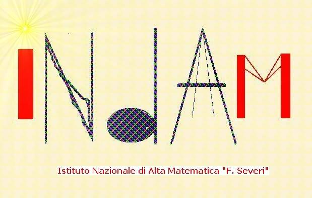

DINAMICA IN
ITALIA
Finanziato
dall'INDAM
e dalla
SNS,
25-27 Giugno 2003
La conferenza fa parte delle attività del
progetto intergruppo INDAM ``Interacting Dynamical
Systems".
Si propone lo scopo di fare il punto sullo studio della Dinamica in
Italia. In particolare si vuole dare l'opportunità di creare un
dialogo tra vari aspetti dei sistemi dinamici in
italia che, sebbene siano strettamente connessi
negli scopi e nelle metodologie, sono rimasti
frammentati nel panorama italiano.
Per partecipare o avere maggiori informazioni mandare un messaggio a
liverani@mat.uniroma2.it.
Organizzatori: Marco Abate, Stefano Marmi, Carlangelo Liverani